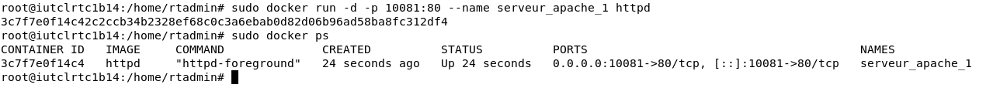
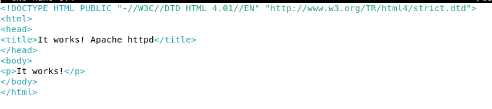

Conteneurisation Docker.
Virtualisation Légère / Micro-services / Administration Linux1. Contexte du Projet
Dans ce projet, j'ai exploré l'univers de la conteneurisation en utilisant Docker sur une distribution Linux Debian. L'objectif était de comprendre comment isoler des applications dans des environnements standardisés, légers et portables, contrastant avec la virtualisation lourde classique.
J'ai pris en charge l'installation du moteur Docker, la manipulation des conteneurs en ligne de commande, ainsi que la configuration avancée des réseaux et de la persistance des données.
2. Travail Fourni
A. Déploiement du Serveur Apache
Après avoir installé Docker, j'ai lancé mon premier conteneur Apache nommé serveur_apache_1. J'ai utilisé l'option -p 8080:80 pour mapper le port 80 du conteneur sur le port 8080 de ma machine physique. Ce premier succès m'a permis de vérifier l'accessibilité du service via http://localhost:8080.

Commande docker run et vérification du statut
B. Modification & Persistance
Je suis entré à l'intérieur du conteneur en mode interactif avec la commande docker exec -it bash. J'ai alors modifié le fichier index.html original pour afficher mon propre contenu : "Le site de Semih".
Pour éviter que ces modifications ne disparaissent à l'arrêt du conteneur, j'ai réalisé un docker commit, créant ainsi une nouvelle image persistante appelée apache_modifie:v1.

Rendu du site personnalisé après modification
C. Exportation & Réseaux Bridge
Pour assurer la portabilité de mon travail, j'ai exporté mon image modifiée dans un fichier archive .tar via la commande docker save. Enfin, j'ai configuré un réseau virtuel de type Bridge personnalisé. Cette étape m'a permis de connecter plusieurs conteneurs entre eux sur un sous-réseau isolé, simulant une infrastructure multi-services.
# Exportation de l'image personnalisée
$ sudo docker save -o apache_modifie.tar apache_modifie:v1
# Création et inspection du réseau bridge
$ sudo docker network create --driver bridge mon_reseau
$ sudo docker network inspect mon_reseau
3. Difficultés Rencontrées
Le principal défi a été d'appréhender le cycle de vie éphémère des conteneurs. J'ai dû apprendre à manipuler les commandes de commit pour ne pas perdre mes configurations. De plus, la gestion des conflits de ports et le routage entre les réseaux Bridge ont nécessité une analyse rigoureuse des adresses IP attribuées dynamiquement par Docker.
4. Résultat Final
L'infrastructure Docker est aujourd'hui parfaitement maîtrisée. Je suis capable de packager n'importe quel service web, de personnaliser son environnement interne et de l'exporter pour un déploiement rapide. Cette compétence en conteneurisation est le socle de mon approche DevOps.